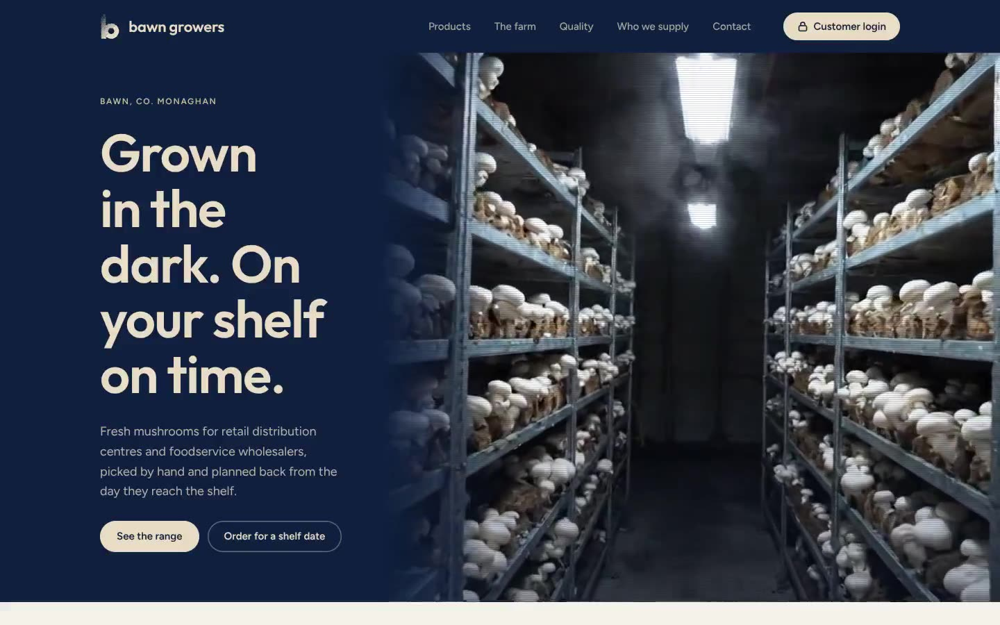

ReillyEngineering
A CNC machine dealer selling €100,000 decisions. The site starts from the part a buyer needs to make and stays with the machine for its whole working life.
- Sector
- CNC machine distributor, Swords
- Role
- Research, design and build
- Built with
- HTML, CSS, JavaScript, Claude Code
Choosing a machine
A toolmaker who has to produce a hip stem doesn’t know which machine he needs; he knows the part. I added a switch that turns the machine strip into a strip of parts, each linked to the machines that make it, so he reaches the right machine without learning the catalogue.
A buyer weighing a €300,000 machine and an engineer who already runs one need different things from the same page. I put both behind one switch, specs and options for one, service, spares and upgrades for the other, so the dealer keeps selling to the customer long after the sale.
Engineers won’t upload a confidential drawing to a dealer they’ve never met. So I ended every part family with a phone number instead of a form: the conversation moves to the showroom, where the sale is actually made.
After the sale
A dealer earns most from a machine after it’s sold: used machines, spares, service and software. Competitors bury these in a footer menu. I gave them a full row on the homepage, so a buyer sees twenty years of support before he signs.
An owner ordering a spare part is afraid of getting the wrong one. I let him pick his machine first, so the list shows only parts that fit, with stock and delivery time on every line. Fewer wrong orders for the dealer, and fewer calls to check.
Why trust them
A €100,000 machine is bought from a person, not a logo. I led the page with the founder’s face and the year he started, because a buyer wants to know someone will still answer the phone in ten years.
Every machine dealer writes “high precision”. I showed it instead: a dental implant assembling at real tolerances. Medical work is the strongest proof of accuracy a dealer has, and here the buyer sees it rather than reads it.
For this buyer the next step is a conversation in the showroom with the part on the table. I set the phone number as large as a headline, so that step is impossible to miss.
Type and colour
On the phone


Behind it
How a machine dealer’s site was turned around: from a catalogue of machines to a guide that starts from the work.
The problem
A CNC distributor sells six machines that each cost as much as a house, to engineers who will run them for twenty years. Their sites read like brochures from the manufacturer: a photo, a spec table, a contact form.
The real sale is long and technical, and most of the money comes after it: service, spare parts, upgrades and trade-ins. The site had to help a buyer narrow down the machine, and then keep being useful to the people already running one.
What others do, what I did
Machines grouped by brand, which means nothing to a buyer who knows the part, not the model.
I added a switch that turns the machine strip into a strip of parts, each linked to the machines that make it.
“Aerospace, Medical, Automotive” pages that repeat the same machines with new photos.
I made sectors into tags on machines and parts, and gave the medical work one scene that shows the precision instead of claiming it.
Demo forms that ask for drawings up front.
I ended the pages on a phone number and a line about signing an NDA, because toolmakers do not send drawings to a dealer they have never met.
The site stops at the sale.
I gave every machine page a second view for owners, with service plans, spare parts and upgrades, where most of a dealer’s money is made.
What I left out
- A sector menu. Sectors appear as tags on machines and parts, and the medical work has its own scene.
- Any upload or quote form. The demo section is a phone number, an address and a line about signing an NDA.
- Underlines, small eyebrow labels and step numbers. They added noise to pages that are already dense with figures.
How it is built
Plain HTML, CSS and JavaScript on GitHub Pages: six machine pages, six part families, used machines, service, about and contact, all generated from one data file so a spec only lives in one place.
- Machine strip. The centre machine is a dead zone; the sides start a slow drift that speeds up near the edge, and it settles on the nearest machine when the pointer comes back.
- Implant scene. An SVG drawing pinned for the length of the section. The thread band is a masked copy of the implant body shifted by the thread pitch, so it looks like it turns.
- Same data, two views. The switch on each machine page swaps between two sets of the same record without reloading or moving the page.
Every screen above is a recording of the live site, not a mock-up.
Visit the live site